Designing Data-Intensive Applications
Storage and Retrieval
Knowledge Transfer Session • Chapter 3

"Wer Ordnung hält, ist nur zu faul zum Suchen. (If you keep things tidily ordered, you're just too lazy to go searching.)"
— German proverb
On the most fundamental level, a database needs to do two things: store data, and give it back to you.
The Database's Point of View
Chapter 2 covered data models and query languages. Now we look at what happens under the hood.
- How can we store the data we're given?
- How can we find it again efficiently?
Why should you care?
You probably won't implement a storage engine from scratch, but you must select one that fits your application.
The Big Divide
There's a big difference between engines optimized for transactional workloads and those optimized for analytics.
Two families of storage engines: log-structured and page-oriented (B-trees).
What We'll Cover
🛠 Data Structures
Hash Indexes, SSTables, LSM-Trees, B-Trees, and how they compare.
📈 OLTP vs OLAP
Transaction processing vs. Analytical processing. Data warehousing and ETL.
🧱 Column Storage
Columnar layouts, compression, vectorized processing, and data cubes.
Data Structures That Power Your Database
From Bash scripts to B-Trees
The World's Simplest Database
Two Bash functions implementing a key-value store:
It's just an append-only log — a text file where each line is a key-value pair.
Simple, but...
✅ db_set
Extremely fast! Appending to a file is $O(1)$ — sequential I/O.
❌ db_get
Terrible. Must scan the entire file: $O(n)$. Double the records → double the time.
Many databases internally use a log — an append-only data file. Real databases add concurrency control, disk reclamation, and error handling.
What is a "Log"?
📝 Book Definition
In this book, log = an append-only sequence of records. It doesn't have to be human-readable; it might be binary and intended only for other programs to read.
Not the same as "application logs" (stdout text). Logs are incredibly useful and appear throughout the rest of the book.
The Solution: An Index
An index is an additional structure derived from the primary data.
- Acts as a "signpost" to locate data you want.
- Speeds up reads, but slows down writes.
- Databases don't index everything by default — you choose indexes based on query patterns.
For writes, it's hard to beat simply appending to a file — the simplest possible write operation.
Hash Indexes
In-memory maps for on-disk logs
In-Memory Hash Map
Keep a hash map where every key maps to a byte offset in the data file.
- Write: Append to file, update map with new offset.
- Read: Look up offset in map, seek to location, read value.
This is essentially what Bitcask (default storage engine in Riak) does.
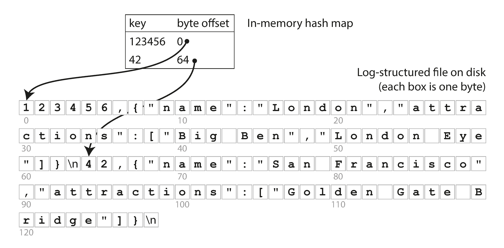
When Hash Indexes Shine
Bitcask requires all keys to fit in RAM. Values can exceed memory — loaded from disk with one seek.
🐱 Cat Video Counter
Key = URL of a cat video, Value = play count. Lots of writes, but not too many distinct keys. Feasible to keep all keys in memory.
If the data file is in the filesystem cache, reads require zero disk I/O.
Managing Disk Space
Append-only logs grow forever. Solution: Compaction.
- Break log into segments of a certain size.
- Close a segment when full, write new data to a new segment.
- Compaction = throw away duplicate keys, keep only the most recent value.
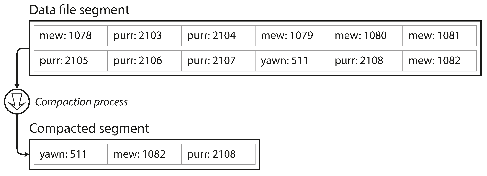
Segment Merging
Compaction makes segments smaller → merge multiple segments into one.
- Done in a background thread.
- Old segments serve reads during merging.
- After merge completes, switch reads to new segment, delete old files.
Each segment has its own in-memory hash table. Lookups check most-recent segment first, then older ones.
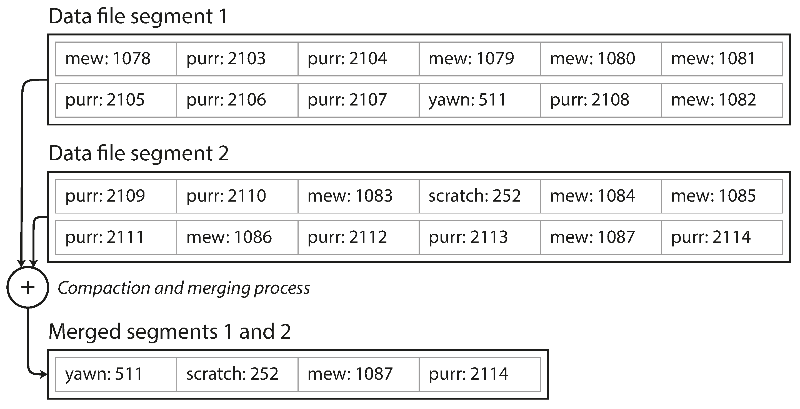
Real-world Implementation Details
Binary Format
Faster than CSV. Encode string length in bytes, then raw string — no escaping needed.
Tombstones
To delete a key, append a special deletion record. Merging discards previous values for that key.
Crash Recovery
Rebuild hash maps by scanning segments (slow), or load snapshots of maps from disk (Bitcask).
Checksums
Detect and ignore corrupted, partially written records after a crash.
Concurrency
One writer thread (sequential appends). Multiple reader threads (segments are immutable).
Why Append-Only?
Why not update the file in place?
- Sequential writes are much faster than random writes, especially on HDDs. Also preferable on SSDs.
- Concurrency and crash recovery are simpler — no partial overwrites to worry about.
- No fragmentation — merging avoids data files getting holes over time.
Hash Index Limitations
❌ Memory Bound
The hash table must fit in RAM. On-disk hash maps perform poorly: lots of random I/O, expensive to grow, fiddly hash collision logic.
❌ No Range Queries
You can't scan keys between kitty00000 and kitty99999 — you'd have to look up each key individually.
We need an indexing structure without these limitations...
SSTables and LSM-Trees
The power of sorting
Sorted String Table (SSTable)
One simple change: require key-value pairs to be sorted by key within each segment.
Three big advantages over hash-indexed log segments:
- Efficient merging — like mergesort, even for files larger than memory.
- Sparse indexing — no need to keep every key in memory.
- Block compression — group records into blocks, compress before writing.
Efficient Merging
Read input files side by side, copy the lowest key to output. Repeat.
- Produces a new merged segment, also sorted.
- When same key appears in multiple segments, keep the value from the most recent segment.
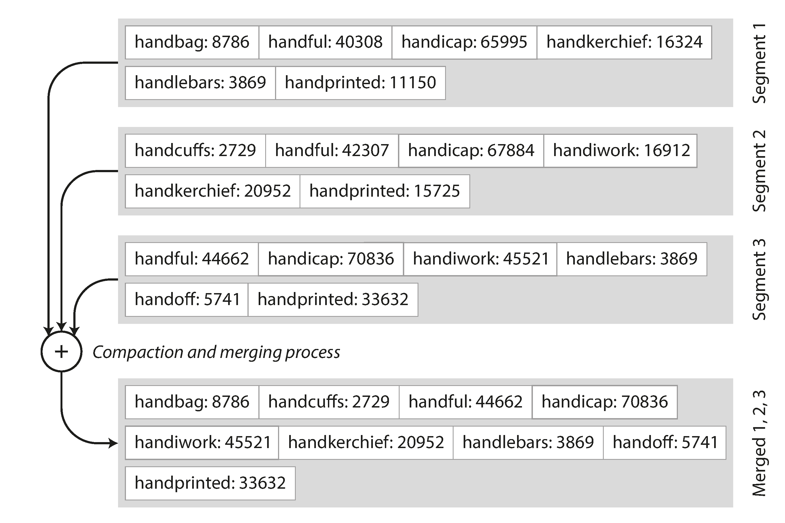
Sparse In-Memory Index
No need to index every key! Just store offsets for every few KB.
- Looking for
handiwork? You know offsets forhandbagandhandsome— scan between them. - Enables block compression: group records into blocks, each index entry points to a compressed block.
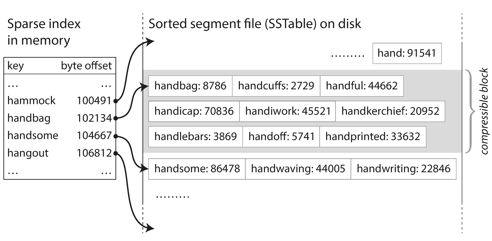
How to Build Sorted Segments?
Maintaining a sorted structure in memory is easy — use a balanced tree (red-black tree, AVL tree).
One Problem: Crashes
If the database crashes, the memtable (in-memory) is lost — recent writes disappear.
Solution: Write-Ahead Log
Keep a separate, unsorted append-only log on disk. Every write is immediately appended. Its only purpose: restore the memtable after a crash. Discarded when memtable is flushed to SSTable.
LSM-Tree Storage Engines
This algorithm is called the Log-Structured Merge-Tree (LSM-Tree), described by Patrick O'Neil et al.
Embedded
LevelDB, RocksDB — designed to be embedded into other applications.
Distributed
Cassandra, HBase — inspired by Google's Bigtable paper (which introduced "SSTable" and "memtable").
Search
Lucene (Elasticsearch/Solr) uses SSTable-like sorted files for its term dictionary.
Lucene: SSTables for Search
A full-text index maps terms (words) to postings lists (IDs of documents containing that word).
- This is a key-value structure: key = term, value = list of document IDs.
- Lucene keeps this mapping in SSTable-like sorted files, merged in the background.
- Much more complex than a simple key-value index, but the same underlying idea.
LSM-Tree Performance Tweaks
🌸 Bloom Filters
Memory-efficient structure: tells you if a key does not exist in the DB. Saves many unnecessary disk reads for nonexistent keys.
📊 Compaction Strategies
- Size-tiered (HBase): Newer/smaller SSTables merged into older/larger ones.
- Leveled (LevelDB/RocksDB): Key range split into levels for incremental compaction, less disk space.
Cassandra supports both strategies.
LSM-Trees: The Key Idea
"Keeping a cascade of SSTables that are merged in the background — simple and effective."
- Works well even when dataset is much bigger than memory.
- Data stored in sorted order → efficient range queries.
- Sequential disk writes → remarkably high write throughput.
B-Trees
The ubiquitous standard since 1970
A Different Philosophy
LSM-Trees
Variable-size segments (several MB+). Always written sequentially.
B-Trees
Fixed-size pages (traditionally 4 KB). Read or write one page at a time. Matches disk hardware blocks.
Like SSTables, B-trees keep key-value pairs sorted by key — enabling lookups and range queries. But that's where the similarity ends.
Hierarchical Search
Start at the root page. Follow references to child pages. Boundaries between references indicate key ranges.
- Looking for key 251? Follow the reference between 200 and 300.
- Continue narrowing until you reach a leaf page with individual keys/values.
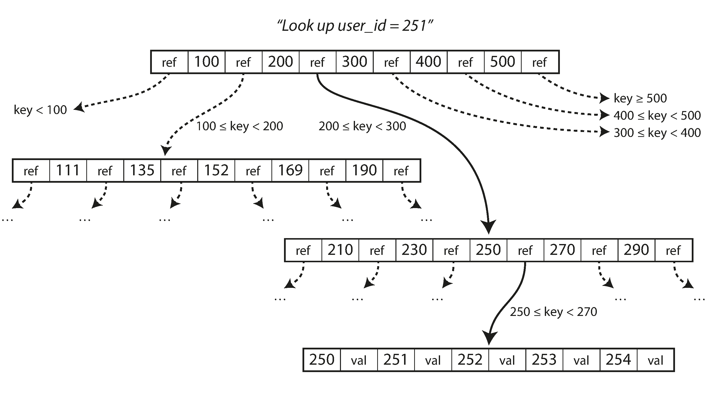
Branching Factor & Depth
The number of child-page references in one page is the branching factor. Typically several hundred.
Depth is always $O(\log n)$. Most databases fit in a B-tree that is 3 or 4 levels deep.
Updates & Page Splitting
Update: Find leaf page → change value → write page back to disk.
Insert: Find the right page. If full, split into two half-full pages, update parent.
This keeps the tree balanced.
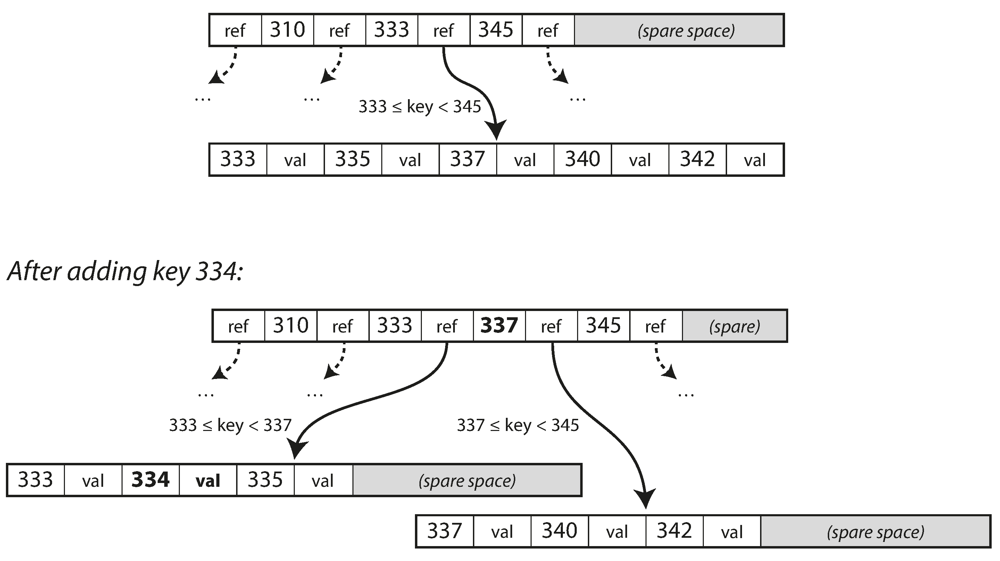
Making B-Trees Reliable
B-trees overwrite pages in place — stark contrast to LSM-trees (append-only).
- On HDD: move disk head, wait for platter, overwrite sector.
- On SSD: must erase and rewrite fairly large blocks.
The Danger of Page Splits
A split requires writing 3 pages (two children + parent). If the DB crashes mid-write → corrupted index (orphan page with no parent).
WAL & Concurrency
Write-Ahead Log (WAL)
Append-only file. Every B-tree modification is written here before applying to tree pages. Used to restore consistent state after a crash.
Latches (Lightweight Locks)
Protect tree data structures for concurrent access. Without them, threads can see the tree in an inconsistent state.
LSM-trees are simpler here — background merging doesn't interfere with queries, and segments are swapped atomically.
Modern B-Tree Techniques
- Copy-on-write (LMDB): Write modified page to a new location, create new parent pointing to it. Useful for concurrency and snapshot isolation.
- Key abbreviation: Interior pages only need boundary info — pack more keys → higher branching factor → fewer levels.
- Sequential layout: Try to keep leaf pages in order on disk for efficient range scans.
- Sibling pointers: Leaf pages link left/right for scanning without jumping back to parents.
- Fractal trees: Borrow log-structured ideas to reduce disk seeks.
LSM-Trees vs B-Trees
Choosing your weapon
The Rule of Thumb
✍️ LSM-Trees
Typically faster for writes.
- Lower write amplification.
- Better compression (smaller disk footprint).
- Sequential write patterns.
📖 B-Trees
Typically faster for reads.
- Each key in exactly one place.
- More predictable response times.
- Better for strong transactional semantics.
Benchmarks are inconclusive and workload-sensitive. Test empirically.
Write Amplification
One write to the database → multiple writes to disk over the lifetime of the data.
B-Trees
Write at least twice: WAL + tree page. Write entire 4KB page even if only a few bytes changed. Some engines write the page twice to avoid partial updates.
LSM-Trees
Rewrite data multiple times due to repeated compaction and merging.
Advantages of LSM-Trees
- Higher write throughput: Sequential writes to compact SSTable files vs. overwriting scattered pages.
- Better compression: LSM-trees periodically rewrite SSTables, removing fragmentation. B-trees leave unused space in split pages.
- Lower storage overhead: Especially with leveled compaction.
On SSDs, firmware already turns random writes into sequential writes internally — but lower write amplification and reduced fragmentation still win.
Downsides of LSM-Trees
- Compaction interference: Background compaction can cause high p99 latency. B-trees are more predictable.
- Bandwidth sharing: Disk bandwidth is split between initial writes and compaction threads. As the DB grows, compaction needs more bandwidth.
- Compaction can't keep up: If write throughput is too high, unmerged segments pile up → disk fills up, reads slow down. Need explicit monitoring.
B-Trees & Transactions
Each key exists in exactly one place in a B-tree index. LSM-trees may have multiple copies across segments.
Why This Matters
Transaction isolation often uses locks on ranges of keys. In a B-tree, locks attach directly to the tree. This makes B-trees attractive for databases with strong transactional semantics.
B-trees are deeply ingrained in database architecture. LSM-trees are increasingly popular in new datastores. No universal winner — test for your use case.
Other Indexing Structures
Beyond primary key lookups
Secondary Indexes
A primary key uniquely identifies one row. Secondary indexes are crucial for efficient joins.
Approach A: Postings List
Each index entry holds a list of matching row IDs.
Approach B: Unique Keys
Append a row identifier to each key to make it unique.
Both B-trees and LSM-trees can be used as secondary indexes.
Where Are the Values Stored?
Heap File
Index points to a location in a separate file. Avoids duplicating data across multiple indexes. Uses forwarding pointers when records move.
Clustered Index
Row data stored directly in the index. InnoDB's primary key is always clustered. Secondary indexes reference the primary key.
Covering Index
Stores some columns in the index. If the index has all columns a query needs, no heap hop required.
Multi-Column Indexes
Concatenated index: Combines fields into one key (e.g., lastname, firstname).
- Like a phone book: good for "all Smiths" or "Smith, John" — useless for "all Johns".
Multi-dimensional indexes: Query several columns at once.
Standard B-tree can't do both dimensions simultaneously. Solutions: space-filling curves, R-trees (PostGIS).
Multi-Dimensional: Not Just Maps
Multi-dimensional indexes work for any multi-attribute query:
🎨 Color Search
3D index on (red, green, blue) to find products in a color range.
🌡 Weather Data
2D index on (date, temperature) — find observations in 2013 where temp was 25-30°C.
🔍 HyperDex
Uses this technique for general multi-dimensional range queries.
Full-Text & Fuzzy Indexes
Searching for similar keys (typos, synonyms) requires different techniques.
- Full-text engines expand queries with synonyms, ignore grammatical variations, search for nearby words.
- Lucene uses a finite state automaton (similar to a trie) as its in-memory index over term characters.
- This can be transformed into a Levenshtein automaton for efficient edit-distance search (e.g., 1 letter added/removed/replaced).
Keeping Everything in Memory
As RAM gets cheaper, many datasets fit entirely in memory.
Cache-only
Memcached: Data lost on restart. Acceptable for caching.
Durable In-Memory
VoltDB, MemSQL, Oracle TimesTen: Durability via WAL, snapshots, or replication. Redis: Weak durability (async writes).
🤔 The Real Performance Win
Not "no disk reads" (OS caches handle that). It's avoiding the overhead of encoding data structures for on-disk formats. Also enables data models hard to do on disk (Redis: priority queues, sets).
Beyond RAM Limits
- Anti-caching: Evict least-recently-used data from memory to disk. Load back when accessed. Like OS virtual memory, but at record granularity instead of page granularity — more efficient. Indexes still must fit in memory.
- Non-volatile memory (NVM): Emerging technology that may change storage engine design fundamentally. Worth watching.
Transaction Processing or Analytics?
OLTP vs. OLAP
Two Access Patterns
🏦 OLTP
Online Transaction Processing. User-facing, interactive. Look up small number of records by key. Low-latency writes.
Note: "Transaction" here doesn't mean ACID — just low-latency reads/writes.
📊 OLAP
Online Analytic Processing. Scan huge numbers of records. Aggregate (COUNT, SUM, AVG). Feed business intelligence reports.
OLTP vs. OLAP Compared
OLTP
- Reads: Small # records by key
- Writes: Random-access, low-latency
- Used by: End users via web apps
- Data: Latest state (current point in time)
- Size: GB to TB
OLAP
- Reads: Aggregates over millions of records
- Writes: Bulk import (ETL) or event streams
- Used by: Internal analysts
- Data: History of events over time
- Size: TB to PB
The Data Warehouse
A separate database for analysts. Don't run expensive scans on your OLTP system!
- Read-only copy of data from all OLTP systems.
- ETL: Extract, Transform, Load.
- Optimized for analytic access patterns — the OLTP indexes we discussed won't cut it here.
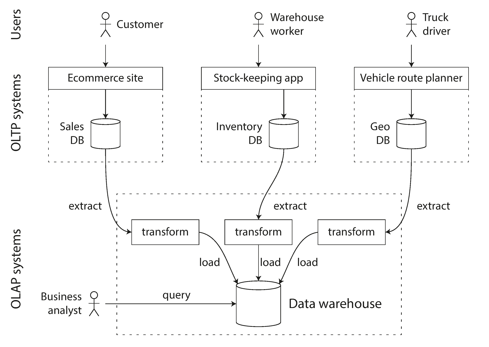
OLTP ≠ Data Warehouse
Both have a SQL interface, but internals are very different.
- Many vendors now focus on one or the other, not both.
- Some (SQL Server, SAP HANA) support both, but with separate storage/query engines behind a common SQL interface.
Data warehouse vendors:
Stars and Snowflakes
Schemas for analytics
Star Schema
The standard for data warehouses (dimensional modeling).
- Fact table at the center: massive, one row per event (sales, clicks, page views). Can be tens of PB.
- Dimension tables surround it: the who, what, where, when, how, why of each event.
Tables are often very wide: fact tables 100+ columns, dimension tables include all relevant metadata.
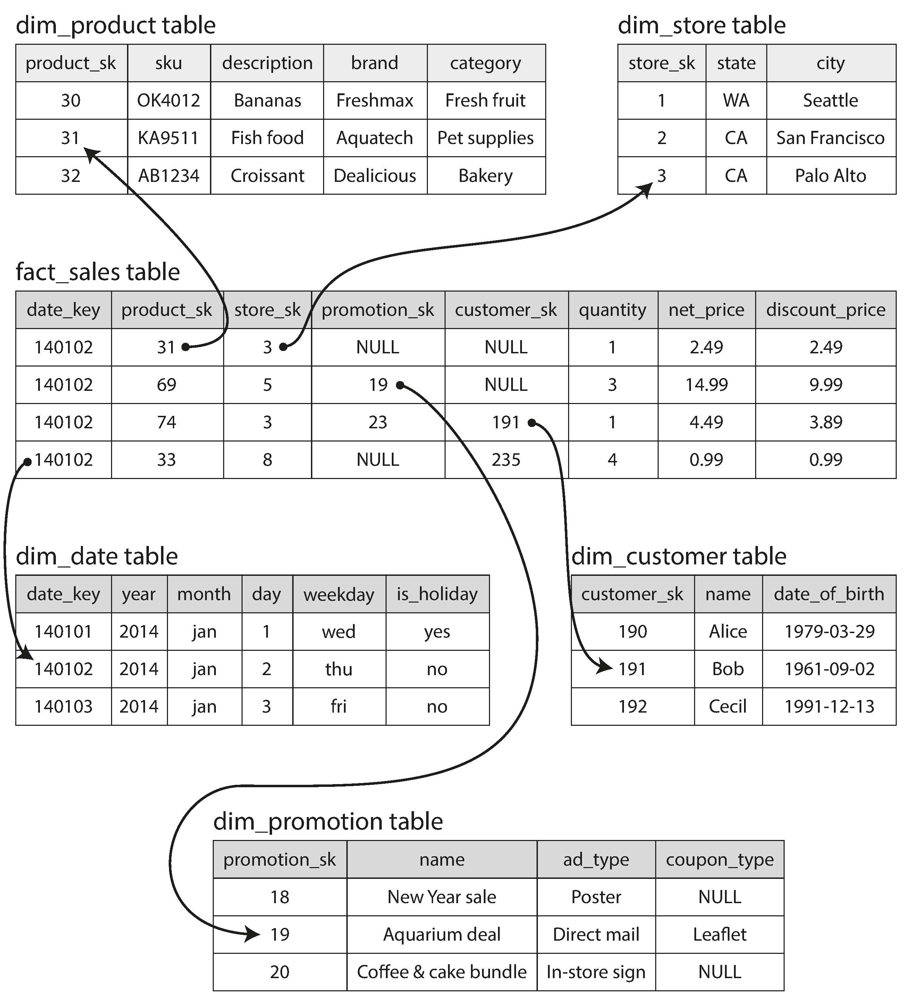
Star vs. Snowflake
🌟 Star Schema
Denormalized dimensions. Simpler to query. Preferred by most analysts.
❄️ Snowflake Schema
Dimensions broken into sub-dimensions (e.g., separate brand and category tables). More normalized, saves space, but more complex joins.
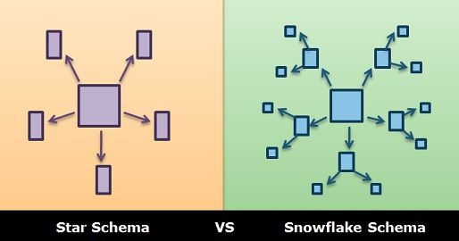
Column-Oriented Storage
Optimizing for broad scans
The Problem: Wide Tables
Fact tables often have 100+ columns, but a typical query only accesses 4 or 5.
Row-Oriented Storage
All values from one row stored together. Even with indexes, you must load entire rows (100+ attributes) from disk, parse them, and filter.
What if we don't load the columns we don't need?
Example: Fruit vs. Candy Sales
Scans millions of rows, but only needs 3 columns: date_key, product_sk, quantity.
Store Columns, Not Rows
Store all values from each column together in a separate file.
- Query only reads and parses the columns it needs.
- Relies on each column file having rows in the same order — reassemble row N by taking the Nth entry from each column file.
Applies to nonrelational data too: Parquet is a columnar format supporting document data models.
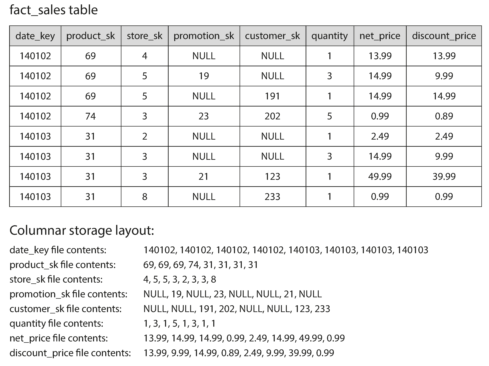
⚠️ Column Families ≠ Column-Oriented
Cassandra and HBase have column families (from Bigtable), but it's misleading to call them column-oriented.
The Difference
Within each column family, they store all columns from a row together, along with a row key. They do not use column compression. The Bigtable model is still mostly row-oriented.
Bitmap Encoding
Columns often have few distinct values relative to row count (e.g., 100K products, billions of rows).
- Turn column into n bitmaps (one per distinct value), one bit per row.
- If n is large → bitmaps are sparse → run-length encode them for compact storage.
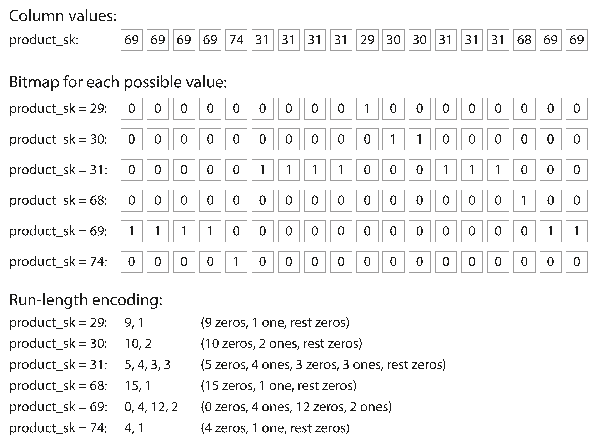
Fast Query Execution with Bitmaps
WHERE product_sk IN (30, 68, 69)
Load 3 bitmaps → bitwise OR → get all matching rows. Extremely fast.
WHERE product_sk = 31 AND store_sk = 3
Load 2 bitmaps (from different columns!) → bitwise AND. Works because columns store rows in the same order.
CPU Efficiency: Vectorized Processing
For queries scanning millions of rows, getting data from disk to memory isn't the only bottleneck.
- Column-oriented data fits in CPU L1 cache — tight loops with no function calls.
- SIMD (Single Instruction, Multi-Data) instructions process compressed column chunks directly.
- Avoids branch mispredictions and function call overhead.
- Column compression lets more rows fit in the same cache space.
Strategic Sort Order
Data must be sorted by entire row (same order across all column files).
- Choose sort keys based on common queries (e.g.,
date_keyfirst for date-range queries). - Second sort key (e.g.,
product_sk) groups same-product sales within each date. - Sorting enables run-length encoding on the first sort key — long repeated values compress to kilobytes even with billions of rows.
Compression effect weakens for later sort keys — they're more jumbled.
Multiple Sort Orders
C-Store / Vertica: Store the same data sorted in several different ways.
- Data is replicated across machines anyway — store each replica in a different sort order.
- When processing a query, use the sort order that best fits the query pattern.
- Similar concept to multiple secondary indexes in row stores, but without pointers — just columns of values in different orders.
Writing to Column Stores
Column compression and sorting make reads fast, but writes harder.
Solution: LSM-Trees (Again!)
All writes go to an in-memory store (sorted structure). When enough accumulate, bulk-merge with column files on disk. This is what Vertica does.
Queries examine both column data on disk and recent writes in memory. The query optimizer hides this — writes are immediately reflected in subsequent queries.
Data Cubes (OLAP Cubes)
A grid of precomputed aggregates grouped by different dimensions.
- Example: SUM of net_price for each (date, product) combination.
- Can summarize along each dimension (sales by product regardless of date, or vice versa).
- 5 dimensions → 5D hypercube.
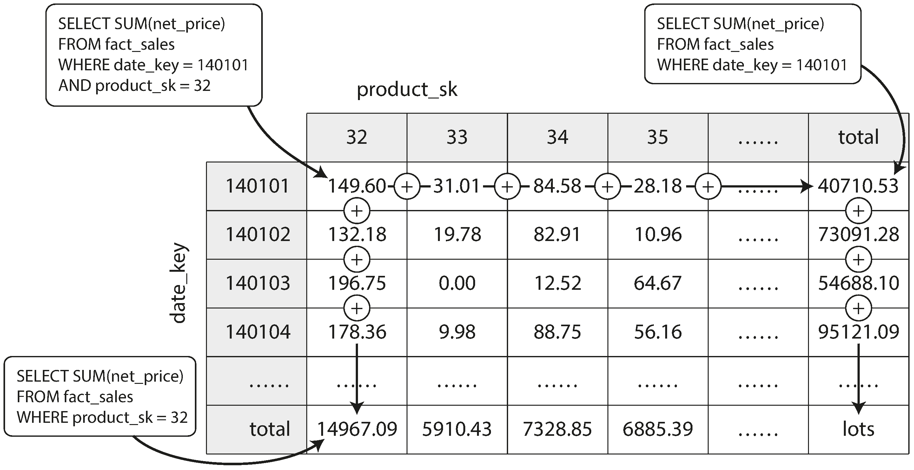
Materialized Views
A table-like object whose contents are the results of a query, written to disk.
Virtual View
Just a shortcut for a query. Expanded on the fly.
Materialized View
Actual copy of results on disk. Must be updated when underlying data changes — makes writes more expensive.
Data cubes are a special case. Fast for standard reports, inflexible for ad hoc queries. Most warehouses keep raw data and use cubes as a performance boost.
Summary
OLTP: Two Schools of Thought
Log-Structured
Append-only, never update written files. Turn random writes into sequential writes.
Update-in-Place
Disk as fixed-size pages that can be overwritten. Used in all major relational databases.
Disk seek time is the bottleneck. Indexes speed up reads, slow down writes. Choose wisely.
OLAP: Column Storage is King
- Data warehouses handle few but massive queries — disk bandwidth is the bottleneck (not seek time).
- Column-oriented storage: Read only the columns you need.
- Compression: Bitmap encoding, run-length encoding for sorted columns.
- Vectorized processing: Exploit CPU caches and SIMD instructions.
- Materialized views & data cubes: Precompute common aggregates.
Questions?
Designing Data-Intensive Applications • Chapter 3